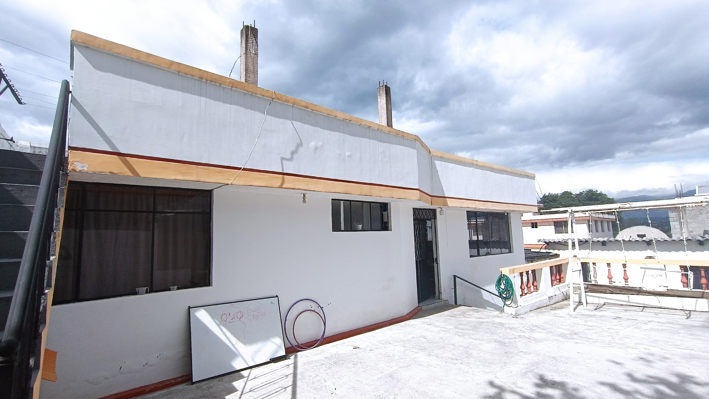
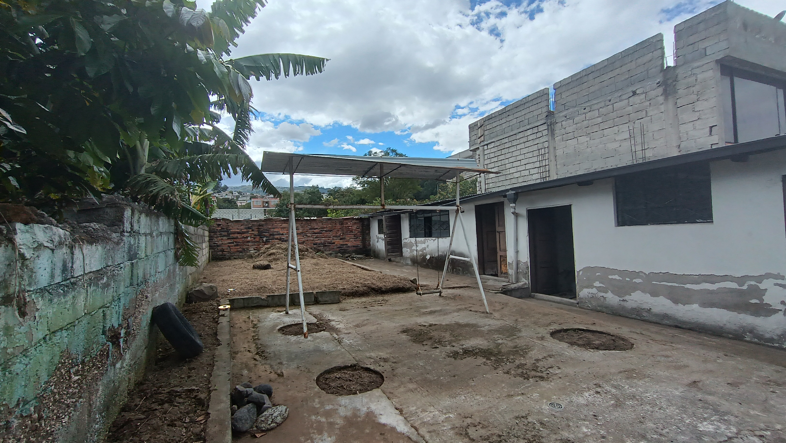
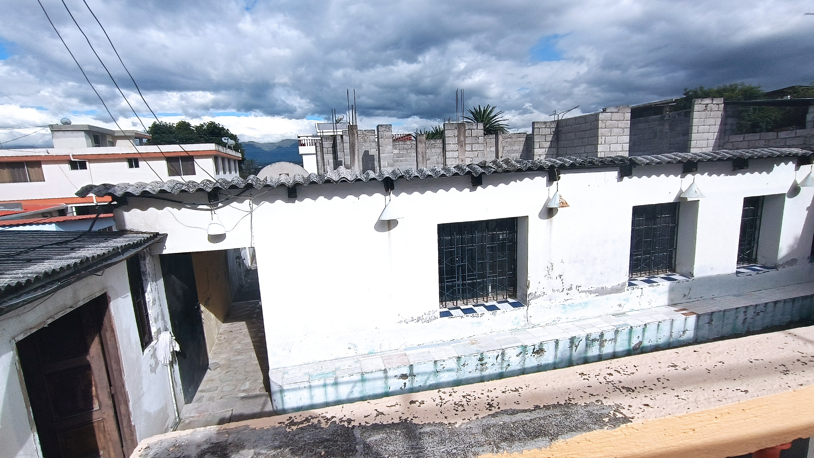
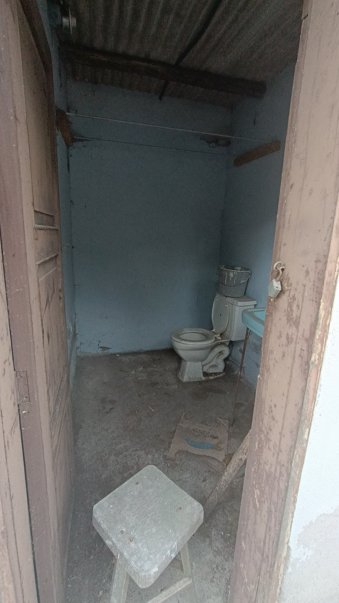
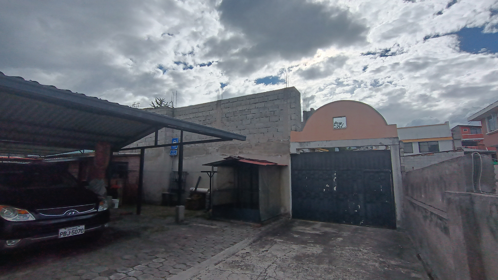
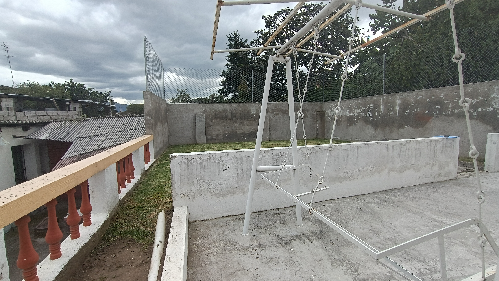
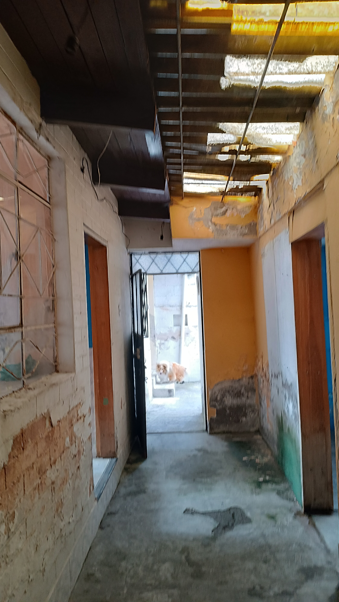
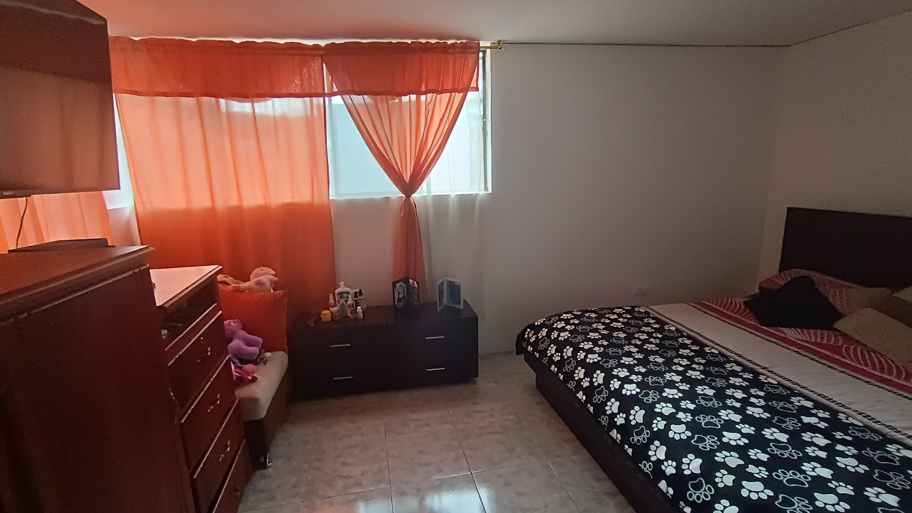
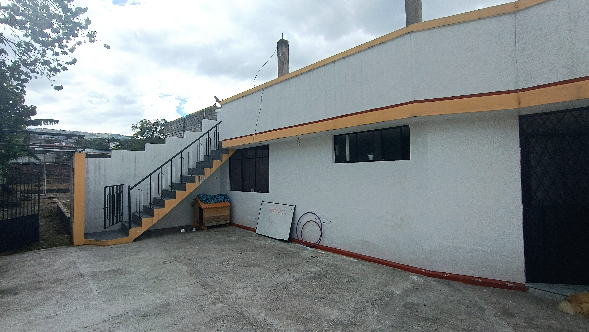
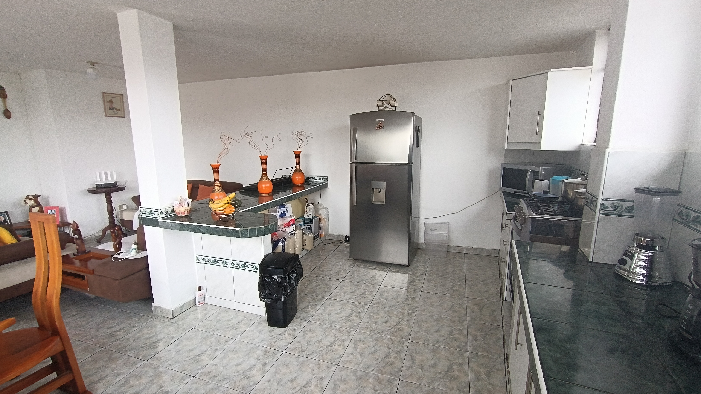

← volver al mapa
Casa - EC-RJ-154646
EC-RJ-154646 · casa · QUITO, Pichincha
★ Oferta destacada










Datos del remate
| Avalúo pericial | $114,841 |
| Tipo de bien | casa |
| Área de construcción | 310.43 m² |
| Área de terreno | 698.70 m² |
| Cantón / Provincia | QUITO, Pichincha |
| Dirección / Sector | conocoto. parroquia conocoto, calle la paz n2-109 y josé felix gallardo |
| Señalamiento | Tercer Señalamiento |
| Fecha de remate | 2026-08-24 |
| No. de proceso | 1730120101514 |
Análisis vs. mercado
| Avalúo por m² | $370/m² |
| Mediana de mercado en la zona | $856/m² |
| Descuento vs. mercado | 56.8% |
| Comparables usados | 11 |
| Radio de búsqueda | 2000 m |
| Puntaje | 92/100 |
Descripción completa del avalúo
casa y terreno. el ingreso se realiza a través de un pasaje común de 3.40 mts. la propiedad se encuentra compuesta por varias construcciones que corresponden a vivienda, área de máquinas, áreas sin uso, bodegas, patio aterrazado, área de jardín y cerramiento perimetral.el terreno cuenta con plataformas en dos niveles, donde se encuentran implantadas las construcciones y áreas comunes. el predio presenta dos construcciones en mal estado, con patologías físicas, tales como desgaste de acabados, agrietamiento, fisuras, filtraciones de agua, acabados sin mantenimiento, humedad en paredes exteriores y sin pintura, entre otros. es importante tomar en cuenta las observaciones respecto al predio y la ficha irm, mencionadas anteriormente en antecedentes, ya que las construcciones no cumplen la normativa municipal, un porcentaje de áreas construidas no constan en esta ficha registral. adicionalmente la forma del terreno registrada en catastros del municipio, no corresponde al lote definido en escrituras y dimensiones comprobadas en sitio.
ubicado en la ciudad de quito, parroquia conocoto, calle la paz n2-109 y josé felix gallardo
parroquia conocoto, calle la paz n2-109 y josé felix gallardo
Límites: norte: propiedad de la señora alejandrina proaño. en extensión 52.60 mts sur: propiedad del señor héctor bernal lópez. en 24.80 cms. y en otra parte con lucía proaño, en 13.40 mts. este: en 18.40 centímetros, con lote número dos, de propiedad de los señores luis osejos y flora proaño, pasaje común y propiedad de alejandrita proaño. oeste: con propiedad de césar quiroz, en diez metros noventa centímetros, en una parte y en otra con héctor bernal lópez, en siete metros setenta centímetros.
Clave catastral: 401964
Análisis de inversión
✕ Mala oportunidadA pesar del alto descuento nominal (58%), el propio avalúo advierte que las construcciones NO cumplen la normativa municipal, que hay áreas construidas que no constan en el registro catastral, y que la forma del lote no coincide con el catastro — riesgos legales serios que el sistema no marca automático.
A favor:
En contra:
- No cumple normativa municipal
- Áreas no registradas en catastro
- Discrepancia de forma del lote
Análisis elaborado a partir de la descripción del avalúo — no es asesoría legal ni financiera.
Esta ficha es una copia de lo publicado en el sitio oficial de remates
judiciales de la Función Judicial del Ecuador, para consulta — no
reemplaza el expediente judicial. remates.funcionjudicial.gob.ec no da
un link propio por remate, por eso se generó esta página aparte.
Antes de ofertar, el expediente debe revisarlo un abogado.